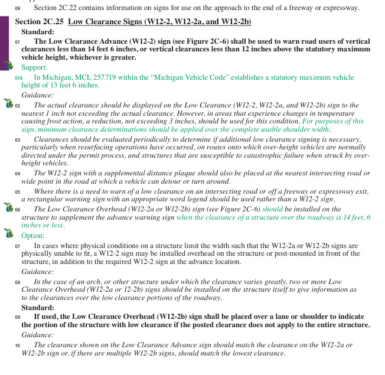
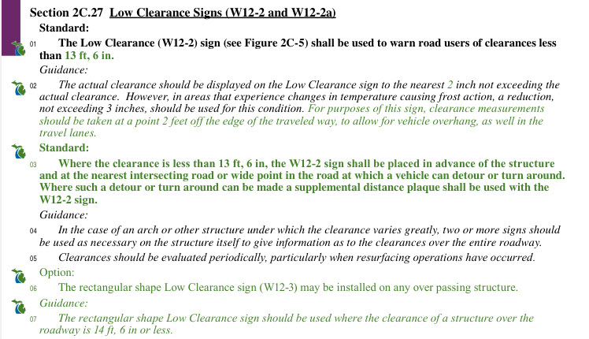
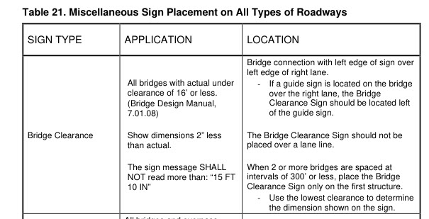
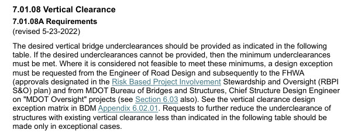
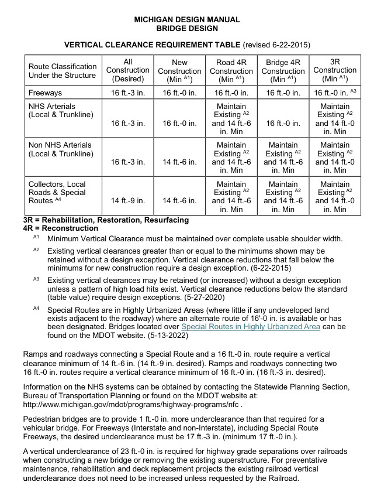

Two-Way Bridge Clearance Calculator
Enter six decimal-foot readings for each travel direction. Choose one clearance for the whole bridge or calculate a separate clearance for each direction.
Why this calculator: the MMUTCD changed
Michigan’s advance-warning threshold increased by 1 foot: from below 13 ft 6 in to below 14 ft 6 in. A bridge with 14 ft of actual clearance falls within the new advance-warning threshold even though it did not fall within the old threshold.
Low-clearance signing: earlier MMUTCD versus 2025 MMUTCD
Provision
Earlier MMUTCD · Section 2C.27
2025 MMUTCD · Section 2C.25
Advance warning
W12-2 required below 13 ft 6 in.
W12-2 required below 14 ft 6 in, or below the statutory maximum vehicle height plus 12 inches, whichever is greater. Michigan’s 13 ft 6 in statutory height makes the threshold 14 ft 6 in.
Displayed clearance
Guidance uses 2-inch increments without exceeding actual clearance.
Guidance uses 1-inch increments without exceeding actual clearance.
Measurement coverage
Guidance includes the travel lanes and a point 2 feet off the edge of the traveled way to account for vehicle overhang.
Michigan guidance applies minimum-clearance determinations over the complete usable shoulder width.
Overhead signs
Rectangular low-clearance signing recommended at structures with clearance of 14 ft or less.
W12-2a or W12-2b overhead signing recommended at 14 ft 6 in or less. W12-2b identifies a specific low-clearance lane or shoulder; the advance legend should match the lowest overhead value.
What this calculator helps with: Check the new advance-warning threshold using actual field measurements, then convert decimal feet to a sign legend using whole-inch rounding. The selected logic determines whether both sides share one bridge minimum or each direction uses its own minimum.
The frost allowance existed in both editions. Both include guidance for a reduction of up to 3 inches where frost action affects clearance. This calculator applies a fixed 3-inch allowance after checking the actual minimum against the advance-warning threshold.
Compare the earlier Section 2C.27 excerpt , 2025 Section 2C.25 excerpt , and MDOT’s Michigan provisions for Section 2C.25 (PDF, page 13) . See the compliance dates below.
How this calculator works
Choose the calculation logic
Logic 1: One height for the whole bridge
Logic 2: Separate height for each direction
Logic 1 uses the lowest of all 12 readings for both sides of the bridge. Both sides use the same sign legend and threshold decision.
The 14 ft 6 in threshold is checked BEFORE the 3-inch reduction.
Find the actual minimum. Use the lowest of all 12 readings across both travel directions and both bridge ends. Apply that minimum to both sides. Check whether signing is required. Compare that actual minimum with 14 ft 6 in. Only a measurement below 14 ft 6 in triggers signing in this calculator. Exactly 14 ft 6 in or higher does not trigger signing.Calculate the sign legend. Subtract the 3-inch frost/resurfacing allowance from the actual minimum, then round down to a whole inch. This adjusted value determines the displayed legend; it does not change the threshold decision.
Logic 1 example: If the directional minimums are 14 ft 2 in and 14 ft 4 in, both sides use 14 ft 2 in as the actual minimum and display 13 ft 11 in after the 3-inch reduction.
Example: An actual minimum of 14 ft 7 in produces a calculated legend of 14 ft 4 in after the reduction. Signing is not required by this calculator’s threshold because the actual minimum is above 14 ft 6 in.
Two-way layout: Each travel direction uses six readings: EM left, crown, and EM right at the entering and exiting ends of the bridge. See the RCOC Low Clearance Signs guidance .
Advance warning: Use a W12-2 in advance when actual vertical clearance is less than 14'-6", or less than 12 inches above the statutory maximum vehicle height, whichever threshold is greater.Displayed clearance: Show the clearance to the nearest inch without exceeding the actual clearance. A reduction of up to 3 inches should be used where frost action can change the clearance.Overhead signs: W12-2a or lane-specific W12-2b signs may supplement the advance sign. Use additional overhead signs where clearance varies greatly, and keep the advance legend consistent with the lowest overhead value.
MDOT Design Advisory DA 2026-02 — 2025 MMUTCD (PDF) April 20, 2026 . The advisory includes Table 1B-1 and its five-year target compliance periods for low-clearance advance signs and variable-clearance overhead signs. These items are coordinated statewide and are excluded from the August 7, 2026 project-use requirement.
August 7, 2026
Michigan project-use date: The 2025 MMUTCD applies to MDOT-let projects whose contract documents reference its latest version beginning with this bid letting. Table 1B-1 items follow separate statewide coordination.
January 18, 2029
Low-clearance target date: Five years after the 11th Edition's January 18, 2024 effective date for Section 2C.25, Paragraph 1 (W12-2 advance-sign requirement) and Paragraph 8 (variable-clearance overhead-sign guidance).
Sources: MUTCD Table 1B-1 and the MDOT Design Advisory linked above.
Bridge-wide results
Logic 1: Both sides use the lowest of all 12 readings. Each sign legend includes the 3-inch frost/resurfacing allowance and is rounded down to a whole inch.
Enter all 12 readings to calculate one height for both sides.
Travel Direction 1
Calculated W12-2a overhead sign legend
Actual minimum
—
—
Allowance
− 3"
Frost / resurfacing
Sign legend
—
Rounded down
Show Travel Direction 1 calculation
Enter all 12 readings to calculate one height for both sides.
Travel Direction 2
Calculated W12-2a overhead sign legend
Actual minimum
—
—
Allowance
− 3"
Frost / resurfacing
Sign legend
—
Rounded down
Show Travel Direction 2 calculation
Important: “Sign legend” and “sign required” are separate. The standard threshold is checked against the actual measured minimum before the 3-inch allowance. A calculated sign legend below 14 ft 6 in does not itself trigger signing.
Reference images
Expand a reference to view the excerpt. Select an image to open it at full size in a new tab.
Low clearance signs — Section 2C.25

Section 2C.25: Low Clearance Signs (W12-2, W12-2a, and W12-2b).
Low clearance signs — Section 2C.27

Section 2C.27: Low Clearance Signs (W12-2 and W12-2a). This excerpt uses different thresholds and rounding guidance from Section 2C.25 above.
Bridge clearance sign placement — Table 21

Table 21: Miscellaneous Sign Placement on All Types of Roadways — Bridge Clearance row.
Vertical clearance requirements — Section 7.01.08A

Section 7.01.08 Vertical Clearance, 7.01.08A Requirements (revised May 23, 2022).
Bridge design vertical clearance requirement table

Michigan Design Manual — Bridge Design: Vertical Clearance Requirement Table (revised June 22, 2015), with footnotes and additional clearance criteria.
Bridge clearance signs and interstate exceptions — Section 7.01.08B
Michigan Design Manual — Bridge Design: clearance signing and shared use path guidance, followed by Section 7.01.08B Interstate Vertical Clearance Exception Coordination (revised September 28, 2026).